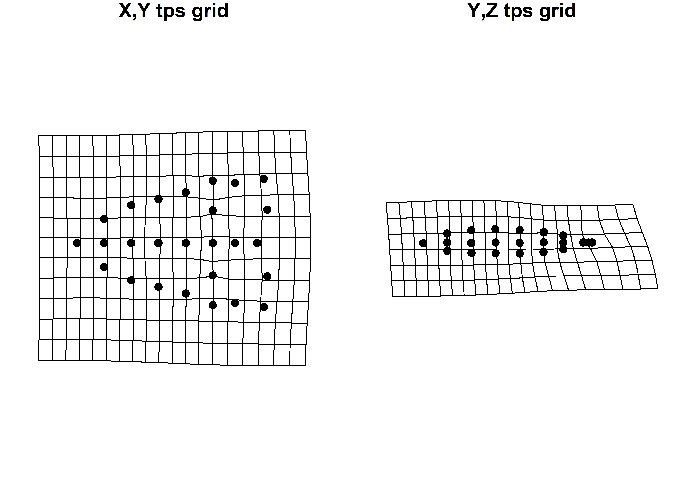
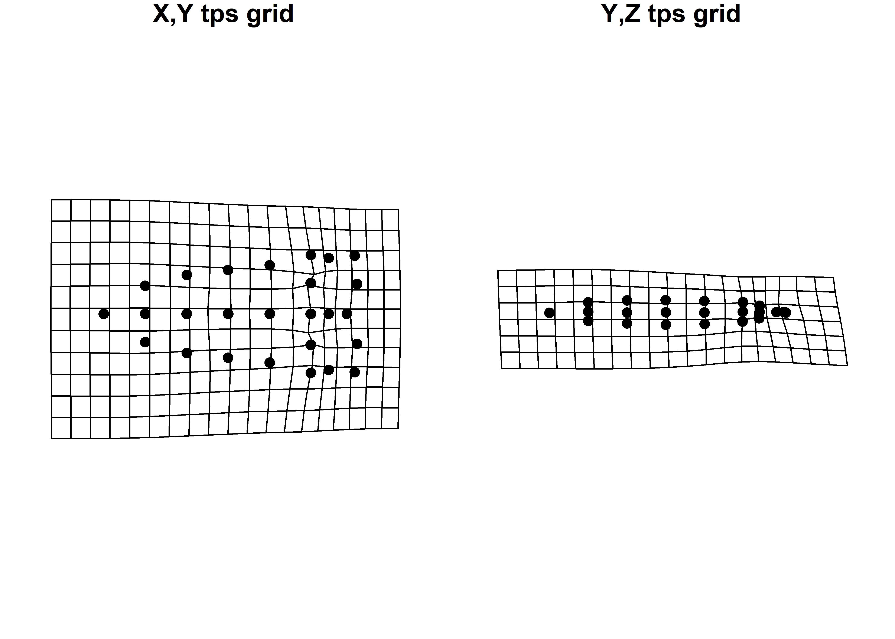

Chapter 5 Bilateral Asymmetry
5.1 Load packages + data
# load packages
# devtools::install_github("geomorphR/geomorph", ref = "Stable", build_vignettes = TRUE)
library(geomorph)
library(tidyverse)
library(wesanderson)
# setwd
setwd(getwd())
# read GM data
source('readmulti.csv.R')
# read .csv files
setwd("./data")
filelist <- list.files(pattern = ".csv")
coords <- readmulti.csv(filelist)
setwd("../")
# read qualitative data
qdata <- read.csv("qdata.csv", header = TRUE, row.names = 1)
qdata <- qdata[match(dimnames(coords)[[3]],rownames(qdata)),]
land.pairs<-read.csv("asymmetry1.csv",header=TRUE)
ind<-rep(1:length(filelist))
# print qdata
knitr::kable(qdata, align = "cccc", caption = "Attributes included in qdata.")| heart.out | heart.reg | bev | bev.type | |
|---|---|---|---|---|
| 11AI225 | H | H | y | unifacial.bimarginal |
| 11HE445 | N | P | n | no.bevel |
| HK49_1462 | N | I | n | no.bevel |
| HK49_2 | N | I | n | no.bevel |
| HK49_3022 | N | I | n | no.bevel |
| HK49_3823 | N | I | n | no.bevel |
| HK49_4 | N | I | n | no.bevel |
| HK49_5928 | N | I | y | alternate |
| HK49_5961 | N | I | n | no.bevel |
| HK49_7 | N | I | y | unifacial.bimarginal |
| KeilMangold10 | H | H | y | alternate |
| KeilMangold13 | H | H | y | alternate |
| KeilMangold14 | H | H | y | alternate |
| KeilMangold17 | H | H | y | alternate |
| KeilMangold24 | H | H | y | alternate |
| KeilMangold3 | H | H | y | alternate |
| KeilMangold8 | H | H | y | alternate |
| Kinzer46 | N | P | n | no.bevel |
| Kinzer49 | N | P | n | no.bevel |
| Welton5 | N | P | y | unifacial.bimarginal |
5.2 Generalized Procrustes Analysis
# gpa for bilateral (object) asymmetry
res.bilat <- bilat.symmetry(coords,
ind = ind,
object.sym = TRUE,
land.pairs = land.pairs,
RRPP = TRUE,
iter = 9999,
print.progress = FALSE)
summary(res.bilat)##
## Call:
## bilat.symmetry(A = coords, ind = ind, object.sym = TRUE, land.pairs = land.pairs,
## iter = 9999, RRPP = TRUE, print.progress = FALSE)
##
##
## Symmetry (data) type: Object
##
## Type I (Sequential) Sums of Squares and Cross-products
## Randomized Residual Permutation Procedure Used
## 10000 Permutations
##
## Shape ANOVA
## Df SS MS Rsq F Z Pr(>F)
## ind 19 0.55459 0.0291889 0.93207 16.0410 8.7614 1e-04 ***
## side 1 0.00584 0.0058441 0.00982 3.2117 2.2748 0.0062 **
## ind:side 19 0.03457 0.0018196 0.05811
## Total 39 0.59501
## ---
## Signif. codes: 0 '***' 0.001 '**' 0.01 '*' 0.05 '.' 0.1 ' ' 1# symmetric shape
symm.shape <- res.bilat$symm.shape[,1:2,]
# plot all specimens in 2D
plotAllSpecimens(symm.shape)
(#fig:symm.shape)Symmetric shape component plotted in 2D.
# asymmetric shape
asymm.shape<-res.bilat$asymm.shape[,1:2,]
# plot all specimens in 2D
plotAllSpecimens(asymm.shape)(#fig:asymm.shape)Asymmetric shape component plotted in 2D.
5.3 Principal Components Analsis
# geomorph data frame
gdf <- geomorph.data.frame(shape = symm.shape,
ashape = asymm.shape,
heart = qdata$heart.out,
hreg = qdata$heart.reg,
bev.1 = qdata$bev,
bev.2 = qdata$bev.type)
# attributes for boxplots
heart <- qdata$heart.out # heartland in/out
hreg <- qdata$heart.reg # heartland region
bev.1 <- qdata$bev # beveled yes/no
bev.2 <- qdata$bev.type # type of beveling
# principal components analysis
pca<-gm.prcomp(res.bilat$symm.shape)
summary(pca)##
## Ordination type: Principal Component Analysis
## Centering and projection: OLS
## Number of observations 20
## Number of vectors 20
##
## Importance of Components:
## Comp1 Comp2 Comp3 Comp4 Comp5
## Eigenvalues 0.01059318 0.001678153 0.001252999 0.0004092055 0.0001681937
## Proportion of Variance 0.72583696 0.114985851 0.085854581 0.0280384699 0.0115245126
## Cumulative Proportion 0.72583696 0.840822807 0.926677388 0.9547158575 0.9662403701
## Comp6 Comp7 Comp8 Comp9 Comp10
## Eigenvalues 0.000139506 8.456292e-05 6.365383e-05 3.931703e-05 3.254404e-05
## Proportion of Variance 0.009558853 5.794191e-03 4.361515e-03 2.693975e-03 2.229894e-03
## Cumulative Proportion 0.975799223 9.815934e-01 9.859549e-01 9.886489e-01 9.908788e-01
## Comp11 Comp12 Comp13 Comp14 Comp15
## Eigenvalues 2.814015e-05 2.715108e-05 2.620734e-05 1.422116e-05 1.223391e-05
## Proportion of Variance 1.928143e-03 1.860373e-03 1.795708e-03 9.744240e-04 8.382586e-04
## Cumulative Proportion 9.928069e-01 9.946673e-01 9.964630e-01 9.974374e-01 9.982757e-01
## Comp16 Comp17 Comp18 Comp19 Comp20
## Eigenvalues 8.532494e-06 7.542445e-06 5.299241e-06 3.790925e-06 2.030733e-33
## Proportion of Variance 5.846404e-04 5.168030e-04 3.631003e-04 2.597515e-04 1.391444e-31
## Cumulative Proportion 9.988603e-01 9.993771e-01 9.997402e-01 1.000000e+00 1.000000e+00# set plot parameters to plot by heartland in (H) and out (N)
pch.gps.heart <- c(15,17)[as.factor(heart)]
col.gps.heart <- wes_palette("Moonrise2")[as.factor(heart)]
col.hull <- c("#798E87","#C27D38")
# plot pca by heartland in (H) and out (N)
pc.plot1 <- plot(pca,
asp = 1,
pch = pch.gps.heart,
col = col.gps.heart)
shapeHulls(pc.plot1,
groups = heart,
group.cols = col.hull)# set plot parameters to plot by heartland + regions
pch.gps.hreg <- c(15,17,18)[as.factor(hreg)]
col.gps.hreg <- wes_palette("Moonrise2")[as.factor(hreg)]
col.hull.2 <- c("#798E87","#CCC591","#C27D38")
# plot pca by heartland + regions
pc.plot2 <- plot(pca,
asp = 1,
pch = pch.gps.hreg,
col = col.gps.hreg)
shapeHulls(pc.plot2,
groups = hreg,
group.cols = col.hull.2)
# set plot parameters to plot by beveled y and n
pch.gps.bev.1 <- c(15,17)[as.factor(bev.1)]
col.gps.bev.1 <- wes_palette("Moonrise2")[as.factor(bev.1)]
col.hull.3 <- c("#C27D38","#798E87")
# plot pca by heartland in (H) and out (N)
pc.plot3 <- plot(pca,
asp = 1,
pch = pch.gps.bev.1,
col = col.gps.bev.1)
shapeHulls(pc.plot3,
groups = bev.1,
group.cols = col.hull.3)
# set plot parameters to plot by bevel type
pch.gps.bev.2 <- c(15,17,18)[as.factor(bev.2)]
col.gps.bev.2 <- wes_palette("Moonrise2")[as.factor(bev.2)]
col.hull.4 <- c("#CCC591","#C27D38","#798E87")
# plot pca by bevel type
pc.plot4 <- plot(pca,
asp = 1,
pch = pch.gps.bev.2,
col = col.gps.bev.2)
shapeHulls(pc.plot4,
groups = bev.2,
group.cols = col.hull.4)
5.4 Define models
5.4.1 Hypothesis 1
5.4.2 Hypothesis 2
5.4.3 Hypothesis 3
5.4.4 Hypothesis 4
5.5 Test Hypothesis 1 (Geo)
Hypothesis 1 assesses whether there is a difference in the symmetric shape of Dalton points found in and out of the heartland.
A residual randomization permutation procedure (RRPP; n = 10,000 permutations) was used for all Procrustes ANOVAs (Adams and Collyer 2015; Collyer and Adams 2018), which has higher statistical power and a greater ability to identify patterns in the data should they be present (Anderson and Ter Braak 2003). To assess whether shape changes with size (allometry), and differs by group (region), Procrustes ANOVAs (Goodall 1991) were also run that enlist effect-sizes (zscores) computed as standard deviates of the generated sampling distributions (Collyer, Sekora, and Adams 2015).

(#fig:lm3d3.a1.h1.asymm)Hypothesis 1 considers whether Dalton points discovered in (left) and out (right) of the Heartland differ in morphology.
##
## Analysis of Variance, using Residual Randomization
## Permutation procedure: Randomization of null model residuals
## Number of permutations: 10000
## Estimation method: Ordinary Least Squares
## Sums of Squares and Cross-products: Type I
## Effect sizes (Z) based on F distributions
##
## Df SS MS Rsq F Z Pr(>F)
## heart 1 0.062184 0.062184 0.23572 5.5514 2.1291 0.0148 *
## Residuals 18 0.201625 0.011201 0.76428
## Total 19 0.263808
## ---
## Signif. codes: 0 '***' 0.001 '**' 0.01 '*' 0.05 '.' 0.1 ' ' 1
##
## Call: procD.lm(f1 = shape ~ heart, iter = 9999, data = gdf, print.progress = FALSE)##
## Analysis of Variance, using Residual Randomization
## Permutation procedure: Randomization of null model residuals
## Number of permutations: 10000
## Estimation method: Ordinary Least Squares
## Sums of Squares and Cross-products: Type I
## Effect sizes (Z) based on F distributions
##
## Df SS MS Rsq F Z Pr(>F)
## heart 1 0.000777 0.00077707 0.01782 0.3265 -1.5462 0.9262
## Residuals 18 0.042837 0.00237986 0.98218
## Total 19 0.043615
##
## Call: procD.lm(f1 = ashape ~ heart, iter = 9999, data = gdf, print.progress = FALSE)5.6 Test Hypothesis 2 (Geo)
Hypothesis 2 assesses whether there is a difference in morphology for Dalton points found in the heartland, the interior, and the northern periphery.
A residual randomization permutation procedure (RRPP; n = 10,000 permutations) was used for all Procrustes ANOVAs (Adams and Collyer 2015; Collyer and Adams 2018), which has higher statistical power and a greater ability to identify patterns in the data should they be present (Anderson and Ter Braak 2003). To assess whether shape changes with size (allometry), and differs by group (region), Procrustes ANOVAs (Goodall 1991) were also run that enlist effect-sizes (zscores) computed as standard deviates of the generated sampling distributions (Collyer, Sekora, and Adams 2015).

(#fig:lm3d3.a1.h2.asymm)Hypothesis 2 considers whether Dalton points discovered in the heartland (left), interior (center), and northern periphery (right) differ in morphology.
##
## Analysis of Variance, using Residual Randomization
## Permutation procedure: Randomization of null model residuals
## Number of permutations: 10000
## Estimation method: Ordinary Least Squares
## Sums of Squares and Cross-products: Type I
## Effect sizes (Z) based on F distributions
##
## Df SS MS Rsq F Z Pr(>F)
## hreg 2 0.068892 0.034446 0.26114 3.0043 1.7144 0.0436 *
## Residuals 17 0.194916 0.011466 0.73886
## Total 19 0.263808
## ---
## Signif. codes: 0 '***' 0.001 '**' 0.01 '*' 0.05 '.' 0.1 ' ' 1
##
## Call: procD.lm(f1 = shape ~ hreg, iter = 9999, data = gdf, print.progress = FALSE)# pairwise comparison of LS means = which differ?
sh.hreg <- pairwise(fit.shape.hreg,
groups = qdata$heart.reg)
summary(sh.hreg,
confidence = 0.95,
test.type = "dist")##
## Pairwise comparisons
##
## Groups: H I P
##
## RRPP: 10000 permutations
##
## LS means:
## Vectors hidden (use show.vectors = TRUE to view)
##
## Pairwise distances between means, plus statistics
## d UCL (95%) Z Pr > d
## H:I 0.11693504 0.1032572 2.5121174 0.0235
## H:P 0.11486613 0.1256580 1.6048425 0.0754
## I:P 0.05015537 0.1266497 -0.4955265 0.6320##
## Analysis of Variance, using Residual Randomization
## Permutation procedure: Randomization of null model residuals
## Number of permutations: 10000
## Estimation method: Ordinary Least Squares
## Sums of Squares and Cross-products: Type I
## Effect sizes (Z) based on F distributions
##
## Df SS MS Rsq F Z Pr(>F)
## hreg 2 0.004157 0.0020787 0.09532 0.8956 -0.072158 0.5358
## Residuals 17 0.039457 0.0023210 0.90468
## Total 19 0.043615
##
## Call: procD.lm(f1 = ashape ~ hreg, iter = 9999, data = gdf, print.progress = FALSE)# pairwise comparison of LS means = which differ?
sh.hreg <- pairwise(fit.shape.hreg.asymm,
groups = qdata$heart.reg)
summary(sh.hreg,
confidence = 0.95,
test.type = "dist")##
## Pairwise comparisons
##
## Groups: H I P
##
## RRPP: 10000 permutations
##
## LS means:
## Vectors hidden (use show.vectors = TRUE to view)
##
## Pairwise distances between means, plus statistics
## d UCL (95%) Z Pr > d
## H:I 0.02107973 0.03446868 -0.2929816 0.5873
## H:P 0.02102447 0.04317079 -0.8695916 0.8006
## I:P 0.03560344 0.04298292 0.9147047 0.17955.7 Test Hypothesis 3 (Techno)
Hypothesis 3 assesses whether there is a discernible difference in morphology for Dalton points that are beveled.
A residual randomization permutation procedure (RRPP; n = 10,000 permutations) was used for all Procrustes ANOVAs (Adams and Collyer 2015; Collyer and Adams 2018), which has higher statistical power and a greater ability to identify patterns in the data should they be present (Anderson and Ter Braak 2003). To assess whether shape changes with size (allometry), and differs by group (region), Procrustes ANOVAs (Goodall 1991) were also run that enlist effect-sizes (zscores) computed as standard deviates of the generated sampling distributions (Collyer, Sekora, and Adams 2015).

(#fig:lm3d3.a1.h3.asymm)Hypothesis 3 considers whether beveled Dalton points (left) differ in morphology from those that are not beveled (right).
##
## Analysis of Variance, using Residual Randomization
## Permutation procedure: Randomization of null model residuals
## Number of permutations: 10000
## Estimation method: Ordinary Least Squares
## Sums of Squares and Cross-products: Type I
## Effect sizes (Z) based on F distributions
##
## Df SS MS Rsq F Z Pr(>F)
## bev.1 1 0.081591 0.081591 0.30928 8.0599 2.5106 0.0027 **
## Residuals 18 0.182217 0.010123 0.69072
## Total 19 0.263808
## ---
## Signif. codes: 0 '***' 0.001 '**' 0.01 '*' 0.05 '.' 0.1 ' ' 1
##
## Call: procD.lm(f1 = shape ~ bev.1, iter = 9999, data = gdf, print.progress = FALSE)# ANOVA: do asymmetric dalton projectile point shapes differ by beveling?
anova(fit.shape.bev.1.asymm)##
## Analysis of Variance, using Residual Randomization
## Permutation procedure: Randomization of null model residuals
## Number of permutations: 10000
## Estimation method: Ordinary Least Squares
## Sums of Squares and Cross-products: Type I
## Effect sizes (Z) based on F distributions
##
## Df SS MS Rsq F Z Pr(>F)
## bev.1 1 0.002356 0.0023564 0.05403 1.0281 0.30544 0.4002
## Residuals 18 0.041258 0.0022921 0.94597
## Total 19 0.043615
##
## Call: procD.lm(f1 = ashape ~ bev.1, iter = 9999, data = gdf, print.progress = FALSE)5.8 Test Hypothesis 4 (Techno)
Hypothesis 4 assesses whether there is a discernible difference in the morphology of specific beveling types associated with Dalton points.
A residual randomization permutation procedure (RRPP; n = 10,000 permutations) was used for all Procrustes ANOVAs (Adams and Collyer 2015; Collyer and Adams 2018), which has higher statistical power and a greater ability to identify patterns in the data should they be present (Anderson and Ter Braak 2003). To assess whether shape changes with size (allometry), and differs by group (region), Procrustes ANOVAs (Goodall 1991) were also run that enlist effect-sizes (zscores) computed as standard deviates of the generated sampling distributions (Collyer, Sekora, and Adams 2015).

(#fig:lm3d3.a1.h4.asymm)Hypothesis 4 considers whether discrete beveling practices articulate with differences in the morphology of Dalton points
##
## Analysis of Variance, using Residual Randomization
## Permutation procedure: Randomization of null model residuals
## Number of permutations: 10000
## Estimation method: Ordinary Least Squares
## Sums of Squares and Cross-products: Type I
## Effect sizes (Z) based on F distributions
##
## Df SS MS Rsq F Z Pr(>F)
## bev.2 2 0.12585 0.062924 0.47704 7.7537 2.9909 6e-04 ***
## Residuals 17 0.13796 0.008115 0.52296
## Total 19 0.26381
## ---
## Signif. codes: 0 '***' 0.001 '**' 0.01 '*' 0.05 '.' 0.1 ' ' 1
##
## Call: procD.lm(f1 = shape ~ bev.2, iter = 9999, data = gdf, print.progress = FALSE)# pairwise comparison of LS means = which differ?
sh.bev.2 <- pairwise(fit.shape.bev.2,
groups = qdata$bev.type)
summary(sh.bev.2,
confidence = 0.95,
test.type = "dist")##
## Pairwise comparisons
##
## Groups: alternate no.bevel unifacial.bimarginal
##
## RRPP: 10000 permutations
##
## LS means:
## Vectors hidden (use show.vectors = TRUE to view)
##
## Pairwise distances between means, plus statistics
## d UCL (95%) Z Pr > d
## alternate:no.bevel 0.16443519 0.09902093 4.6494055 0.0003
## alternate:unifacial.bimarginal 0.14242216 0.13794409 2.0754289 0.0419
## no.bevel:unifacial.bimarginal 0.05555452 0.13736429 -0.4641469 0.6220# ANOVA: does asymmetric dalton projectile point shape differ by bev.2?
anova(fit.shape.bev.2.asymm)##
## Analysis of Variance, using Residual Randomization
## Permutation procedure: Randomization of null model residuals
## Number of permutations: 10000
## Estimation method: Ordinary Least Squares
## Sums of Squares and Cross-products: Type I
## Effect sizes (Z) based on F distributions
##
## Df SS MS Rsq F Z Pr(>F)
## bev.2 2 0.003710 0.0018552 0.08507 0.7904 -0.3441 0.6479
## Residuals 17 0.039904 0.0023473 0.91493
## Total 19 0.043615
##
## Call: procD.lm(f1 = ashape ~ bev.2, iter = 9999, data = gdf, print.progress = FALSE)# pairwise comparison of LS means = which differ?
sh.bev.2 <- pairwise(fit.shape.bev.2.asymm,
groups = qdata$bev.type)
summary(sh.bev.2,
confidence = 0.95,
test.type = "dist")##
## Pairwise comparisons
##
## Groups: alternate no.bevel unifacial.bimarginal
##
## RRPP: 10000 permutations
##
## LS means:
## Vectors hidden (use show.vectors = TRUE to view)
##
## Pairwise distances between means, plus statistics
## d UCL (95%) Z Pr > d
## alternate:no.bevel 0.02136701 0.03348797 -0.15821224 0.5280
## alternate:unifacial.bimarginal 0.02491161 0.04745996 -0.66692921 0.7302
## no.bevel:unifacial.bimarginal 0.03129514 0.04670721 0.07584519 0.4326References
Adams, Dean C., and Michael L. Collyer. 2015. Permutation Tests for Phylogenetic Comparative Analyses of High-Dimensional Shape Data: What you Shuffle Matters. Evolution 69 (3): 8239. https://doi.org/10.1111/evo.12596.
Anderson, M. J., and C. J. F. Ter Braak. 2003. Permutation Tests for Multi-Factoral Analysis of Variance. Journal of Statistical Computation and Simulation 73 (2): 85113. https://doi.org/10.1080=0094965021000015558.
Collyer, Michael L., and Dean C. Adams. 2018. RRPP: An R Package for Fitting Linear Models to High-Dimensional Data using Residual Randomization. Methods in Ecology and Evolution 9 (7): 17729. https://doi.org/https://doi.org/10.1111/2041-210X.13029.
Collyer, M. L., D. J. Sekora, and D. C. Adams. 2015. A Method for Analysis of Phenotypic Change for Phenotypes Described by High-Dimensional Data. Heredity 115 (4): 35765. https://doi.org/10.1038/hdy.2014.75.
Goodall, Colin. 1991. Procrustes Methods in the Statistical Analysis of Shape. Journal of the Royal Statistical Society. Series B (Methodological) 53 (2): 285339.